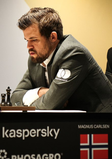
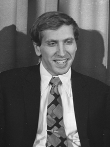

Further Reading Page
General Interest
Wilkinson, Charles K. “Chessmen and Chess.” The Metropolitan Museum of Art Bulletin, vol. 1, no. 9, 1943, pp. 271–79. JSTOR, https://doi.org/10.2307/3257111. Accessed 21 Mar. 2023.
Cleveland, Alfred A. “The Psychology of Chess and of Learning to Play It.” The American Journal of Psychology, vol. 18, no. 3, 1907, pp. 269–308. JSTOR, https://doi.org/10.2307/1412592. Accessed 21 Mar. 2023.
Lipking, Lawrence. “Chess Minds and Critical Moves.” New Literary History, vol. 34, no. 1, 2003, pp. 155–80. JSTOR, http://www.jstor.org/stable/20057770. Accessed 21 Mar. 2023.
In Depth
- This describes what a chess test might look like. It would test proficiency in how well a person plays chess.
Van Der Maas, Han L. J., and Eric-Jan Wagenmakers. “A Psychometric Analysis of Chess Expertise.” The American Journal of Psychology, vol. 118, no. 1, 2005, pp. 29–60. JSTOR, http://www.jstor.org/stable/30039042. Accessed 21 Mar. 2023.
- This describes the early history of chess. It goes through the very early history before the rules were standardized and explains the changes that have happened throughout history.
MacDonell, A. A. “The Origin and Early History of Chess.” The Journal of the Royal Asiatic Society of Great Britain and Ireland, 1898, pp. 117–41. JSTOR, http://www.jstor.org/stable/25207939. Accessed 21 Mar. 2023.
- This describes the impact of the game of chess on society and how it has been perceived throughout history. It goes over how the largest chess championship tournaments were held and how they affected the cold war.
Fine, Gary Alan, and Harvey Young. “Still Thrills: The Drama of Chess.” TDR (1988-), vol. 58, no. 2, 2014, pp. 87–98. JSTOR, http://www.jstor.org/stable/24584870. Accessed 21 Mar. 2023.
Key Figures
- Garry Kasparov was one of the most prominent chess players of all time. He holds the record for the longest time ranked number 1 in the entire world.
KASPAROV, GARRY. “Russia’s Grandest Master: A CONVERSATION WITH GARRY KASPAROV.” World Policy Journal, vol. 29, no. 2, 2012, pp. 25–34. JSTOR, http://www.jstor.org/stable/41510508. Accessed 21 Mar. 2023.
- Magnus Carlsen is the current best player in the world. He is the current world number 1 ranked player and the world champion.
AARON, ARVIND. “Not Quite Checkmated Yet: Despite His Recent Loss to Magnus Carlsen, Chess Maestro Viswanathan Anand Could Well Bounce Back Quickly.” Economic and Political Weekly, vol. 48, no. 50, 2013, pp. 138–138. JSTOR, http://www.jstor.org/stable/24479057. Accessed 21 Mar. 2023.
 - Bobby Fischer is one of the best chess players in history. He was an American world champion and is famous for his domination over the rest of the competition and for his contributions to the game.
E. Pennisi. “Is This the Way Bobby Fischer Does It?” Science News, vol. 145, no. 21, 1994, pp. 327–327. JSTOR, http://www.jstor.org/stable/3978046. Accessed 21 Mar. 2023.

Fun & Games/Recreation
-
https://www.chess.com/home
largest commercial website for playing chess
-
https://lichess.org/
largest completely free website for playing chess
-
https://chesstempo.com/
one of the largest websites for chess puzzles and study